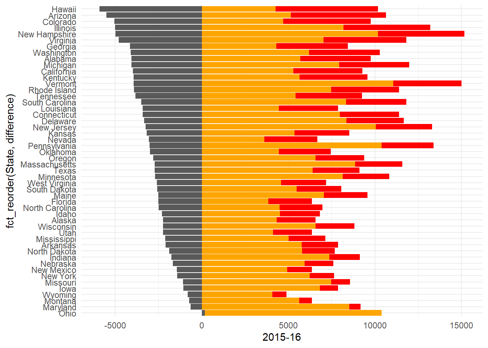
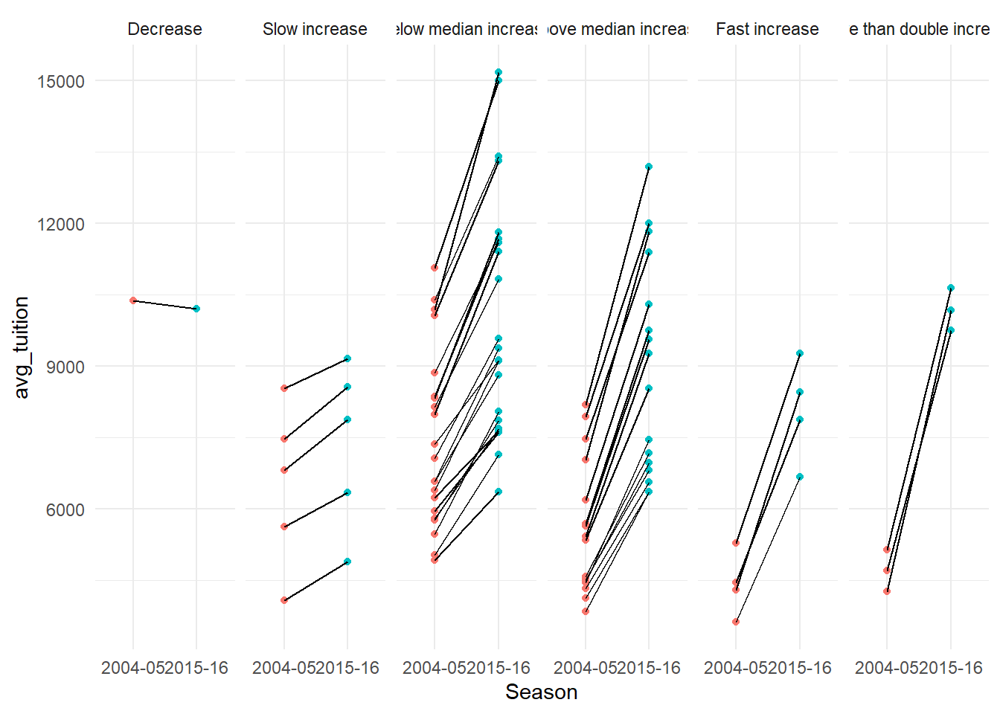
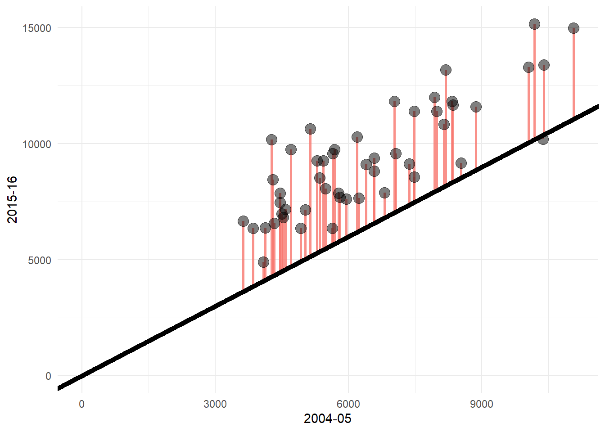
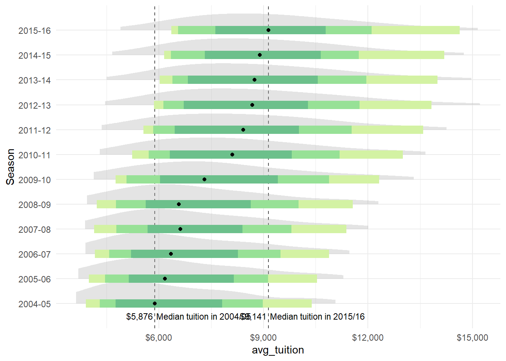

Code
library(glue)
library(scales)
library(ggtext)
library(ggdist)
library(readxl)
library(paletteer)
library(patchwork)
library(tidyverse)Hippolyte Menou
This analysis explores the evolution of university tuition costs across different states in the United States over a twelve-year period (2004-2016). We’ll investigate patterns in tuition increases, state-by-state variations, and potential relationships between initial costs and growth rates.
We begin by loading necessary libraries for data manipulation, visualization, and formatting. Our visual theme is minimalist, using a custom color palette and the Fira Sans font family. We’ve also set up currency formatting for clearer presentation of dollar amounts.
The dataset contains average tuition costs by state from 2004-05 to 2015-16 academic years. We reshape the data into a longer format to facilitate various types of analysis.
Rows: 600
Columns: 3
$ State <chr> "Alabama", "Alabama", "Alabama", "Alabama", "Alabama", "Al…
$ Season <chr> "2004-05", "2005-06", "2006-07", "2007-08", "2008-09", "20…
$ avg_tuition <dbl> 5682.838, 5840.550, 5753.496, 6008.169, 6475.092, 7188.954…Our analysis reveals several interesting patterns in tuition cost evolution:
Overall Growth Patterns: We categorize states into six groups based on their tuition increase rates:
Distribution Changes: The visualization shows how tuition costs have become more concentrated around the median over time, with some notable exceptions at the upper end. The median tuition increased from ${label_dollars(median_tuition_2005)} in 2004-05 to ${label_dollars(median_tuition_2015)} in 2015-16.
Consistency of Increases: Interestingly, despite the 2008 financial crisis, tuition increases remained relatively consistent, with continued growth resuming immediately in the following year.

diff_cutoff <- c(0, 0.23, 0.5, 0.75, 1)
diff_cutoff_names <- c("Decrease", "Slow increase", "Below median increase", "Above median increase", "Fast increase", "More than double increase")
us_avg_tuition %>%
mutate(difference = `2015-16` - `2004-05`,
diff_perc = round(difference / `2004-05`, 2),
diff_group = cut(
diff_perc,
breaks = c(-Inf, diff_cutoff, Inf),
labels = diff_cutoff_names,
right = FALSE),
diff_group = factor(diff_group, levels=diff_cutoff_names)) %>%
pivot_longer(`2004-05`:`2015-16`, names_to = "Season", values_to = "avg_tuition") %>%
filter(Season %in% c("2004-05", "2015-16")) %>%
ggplot(aes(x = Season, avg_tuition, group=State)) +
geom_point(aes(color=Season)) +
geom_line() +
facet_wrap(diff_group~., nrow=1)
us_avg_tuition %>%
mutate(difference = `2015-16` - `2004-05`) %>%
ggplot(aes(x = `2004-05`, y = `2015-16`)) +
geom_segment(aes(x = `2004-05`, y = `2004-05`, xend = `2004-05`, yend = `2015-16`, colour = "segment"), size=1, alpha=0.8) +
geom_point(size=4, alpha=0.5) +
geom_abline(slope = 1, intercept = 0, size=2) +
lims(x= c(0 , NA), y = c(0 , NA))
# us_avg_tuition %>%
# mutate(difference = `2015-16` - `2004-05`,
# diff_perc = round(difference / `2004-05`, 2)) %>%
# ggplot(aes(group=State)) +
# geom_point(aes(x="A", y=0)) +
# geom_point(aes(x = "B", y=diff_perc))
median_tuition <- us_avg_tuition_longer %>%
group_by(Season) %>%
summarize(median = median(avg_tuition)) %>%
ungroup()
median_tuition_2005 <- median_tuition %>% filter(Season == "2004-05") %>% head(1) %>% pull(median)
median_tuition_2015 <- median_tuition %>% filter(Season == "2015-16") %>% head(1) %>% pull(median)
us_avg_tuition %>%
pivot_longer(`2004-05`:`2015-16`, names_to = "Season", values_to = "avg_tuition") %>%
ggplot(aes(x = avg_tuition, y=Season)) +
geom_vline(xintercept = median_tuition_2005, col = "grey30", lty = "dashed") +
annotate("text", y = 0.5, x = median_tuition_2005 + 50, label = "Median tuition in 2004/05", size = 3, hjust = 0) +
annotate("text", y = 0.5, x = median_tuition_2005 - 50, label = label_dollars(median_tuition_2005), size = 3, hjust = 1) +
geom_vline(xintercept = median_tuition_2015, col = "grey30", lty = "dashed") +
annotate("text", y = 0.5, x = median_tuition_2015 + 50, label = "Median tuition in 2015/16", size = 3, hjust = 0) +
annotate("text", y = 0.5, x = median_tuition_2015 - 50, label = label_dollars(median_tuition_2015),
size = 3, hjust = 1) +
stat_halfeye(fill_type = "segments", alpha = 0.3) +
stat_interval() +
stat_summary(geom = "point", fun = median) +
scale_y_discrete(expand = expansion(add = c(1, 0))) +
scale_x_continuous(labels = scales::dollar_format()) +
scale_color_manual(values = palette)
The “lagging university increased faster to get more concentrated around the mean. A few escaped to reach the top
No increase in 2008 yet the trend is consistent as soon as the following year